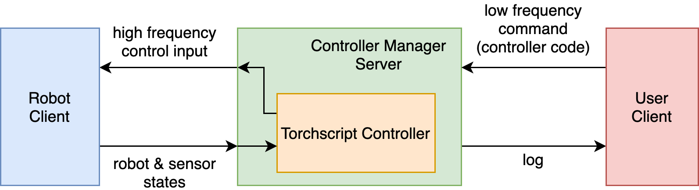

Overview¶
The Controller Manager Server acts as a centralized gRPC server that facilitates all communication. It accepts high-level commands from the user in the form of controller code (in Torchscript), and runs the controllers in a high frequency control loop to control the robot.
The User Client provides an API for users to control the robot.
The Robot Client sends requests containing robot states & observations, and receives server responses containing torques from the output of the current controller running on the Controller Manager Server. The Robot Client can be either a simulation or a real robot, which we will subcategorize as Simulation Client and Hardware Client respectively.
Figure of the client-server architecture:

Commands sent from the User Client and run on the Controller Manager Server are the same regardless of whether a simulated robot or a real robot is connected on the other side, and thus the same user code can be used for running experiments in simulation and on hardware.
Note that everything to the left of the dashed line should be run on a linux machine with real-time capabilities (we use a i7 NUC with PREEMPT_RT installed). The clients are programs that connect to the hardware devices through their own means, and relays messages to/from the Controller Manager Server with RPC.
Polysim¶
Contains:
Simulation Client
The sim wrapper polysim.GrpcSimulationClient connects simulations to the Controller Manager Server.
The package includes several compatible simulation environents, and also exposes a abstract simulation class polysim.AbstractControlledEnv to enable creation of custom simulation environments that are also compatible.